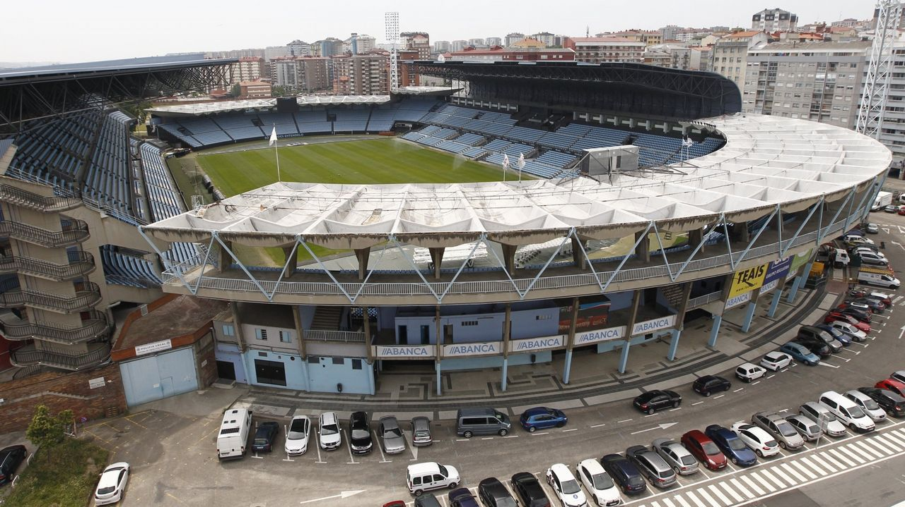

Nesta páxina che deixamos algúns lugares do baixo miño:
Estan disponibles as entradas na web do clube, aqui
Anima ao equipo neste fabuloso estadio!!!!
El Estadio de Balaídos, conocido como Abanca-Balaídos por motivos de patrocinio, es un recinto deportivo de titularidad municipal, situado en la ciudad de Vigo, España. Alberga los partidos como local del primer equipo del Real Club Celta de Vigo.
El puente de Rande es un puente atirantado abierto al tráfico el 7 de febrero de 1981 y une los municipios de Redondela y Moaña, teniendo salida a la rotonda de Domaio (Moaña) para unir con Vilaboa, el Corredor do Morrazo y márgenes del estrecho de Rande, en la ría de Vigo a 9 kilómetros de la ciudad de Vigo y a 18 kilómetros de la ciudad de Pontevedra. Fue proyectado por el ingeniero italiano Fabrizio de Miranda, el español Florencio del Pozo (que también se encargó de la cimentación) y por Alfredo Passaro. En el momento de su construcción fue el segundo puente de este tipo con más luz del mundo. Es el primer puente atirantado en ampliarse del mundo y obtuvo el Premio Europeo a la Construcción metálica más destacada en 1979.